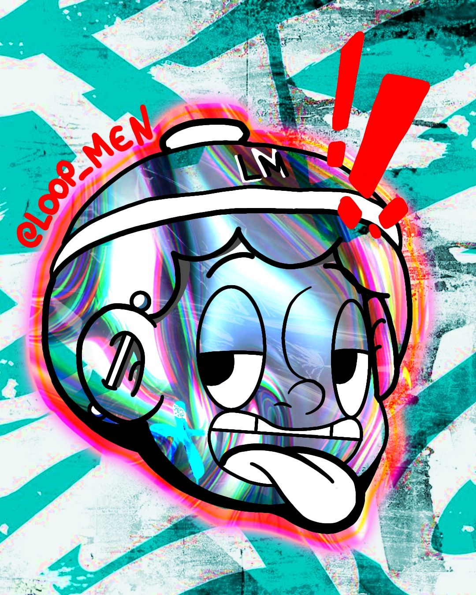
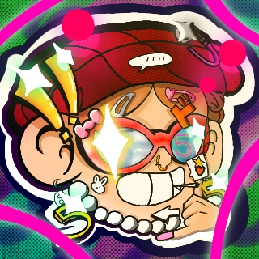
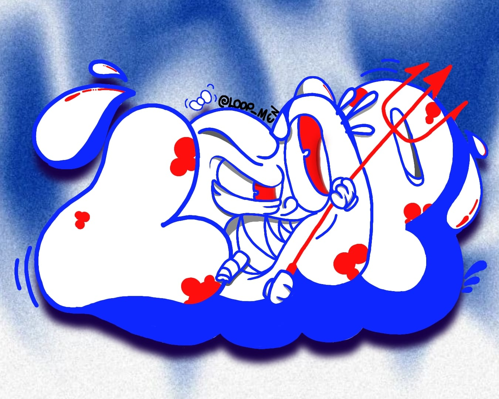

Introdução
Este portfólio apresenta uma seleção dos meus trabalhos em ilustração no estilo cartoon, design e criação visual aplicada ao audiovisual. Meu foco está em desenvolver imagens claras, expressivas e funcionais, capazes de comunicar ideias de forma direta e criativa.Com experiência em projetos de animação, cinema e conteúdo digital, atuo unindo ilustração, narrativa visual e conhecimento técnico de pós-produção. Minha formação e vivência no audiovisual me permitem compreender o processo criativo de forma completa, do conceito à finalização, sempre mantendo uma estética limpa, profissional e consistente.
João Vitor Alves
Sou artista visual e profissional do audiovisual, com atuação em ilustração, design, animação e pós- produção. Minha trajetória nasce da rua, da cultura hip hop e do desenho, e evolui para o cinema, o videoclipe e o audiovisual profissional. Trabalho com olhar criativo, técnico e sensível, unindo estética cartoon, linguagem cinematográfica e atenção aos detalhes de cor, ritmo e narrativa. Tenho experiência em projetos autorais e coletivos, passando por funções como editor, colorista, designer, operador de câmera e fotógrafo. Busco sempre transformar ideias em imagens que comuniquem identidade, emoção e impacto visual.